Star Citizen Japanese Text Creator
使い方マニュアル
Star Citizen のゲーム内テキストを日本語にして、ついでに交易・所持船・ミッション調べまで面倒を見る Windows アプリです。
このページでは、初めて起動したところから一通り使えるようになるまでを図解で説明します。
1このアプリでできること
大きく分けて 3 つのことができます。どれか 1 つだけ使っても構いません。
ゲームを日本語にする
ゲームの Data.p4k からテキストを取り出し、翻訳データベースの日本語を当ててゲームに書き戻します。AI に翻訳させることもできます。
遊ぶための情報を引く
交易ルートの計算、所持船とアップグレード権利の管理、装備の登録、ミッション一覧の検索ができます。
AI に日本語で質問する
ゲームデータや外部 API を AI に調べさせて日本語で答えさせます。ブラウザ・スマホからも使え、音声で読み上げさせることもできます。
翻訳はもう終わっています。AI に翻訳させる必要はありません。
訳し終わった翻訳データベースがアプリに同梱されています（現在の同梱版は Patch 4.10 対応）。 4.10 を遊んでいるなら、API キーも AI の設定も要らず、3. 反映 を押すだけで日本語になります。
2. 翻訳（AI 翻訳）を使うのは、次の 2 つの場合だけです。
- 同梱の翻訳データがまだ対応していない新しいパッチが来て、増えた分を自分で訳したいとき
- 訳の言い回しを自分好みに変えたいとき
2動作要件とインストール
動作要件
- Windows 10 / 11
- .NET 8.0 Runtime（デスクトップランタイム）
- Star Citizen がインストールされていること
- AI 翻訳や AI チャットを使う場合のみ（いずれか 1 つ以上）
- Claude API キー / Gemini API キー / OpenAI (ChatGPT) API キー
- Ollama ＋ Gemma4（ローカル実行・無料。おすすめは
gemma4:e2b/gemma4:e4b。→ 設定方法）
- 音声読み上げを使う場合のみ（任意） — VoiceVox（無料の音声合成エンジン）
- My Hangar 同期を使う場合のみ — WebView2 ランタイム（Evergreen）。Windows 10 / 11 には通常インストール済みです
ダウンロード
| もの | 中身 | リンク |
|---|---|---|
| アプリ本体 (zip) | 展開するだけで動きます。翻訳データベース同梱 | 最新リリース |
| インストーラー (exe) | インストール形式が良い方はこちら（公開されているのは v1.15.0） | SCJPTextCreator-v1.15.0-Setup.exe |
| 翻訳データベース (zip) | Patch 4.10 対応 (2026/9/6)。アプリの インポート (復元) から取り込みます | sc_japanese_backup_20260906_181410.zip |
アプリ本体だけで足ります。v1.14.5 以降は訳し終わった翻訳データベースが本体に同梱されているので、翻訳DB の zip を別途取り込む必要はありません。上の 3 つ目は、本体より新しい翻訳データを先に試したいとき用です。
インストール
- 上の表から アプリ本体 (zip) をダウンロードします。
- 好きな場所に展開します。zip 版はインストール作業なしで動きます。
- 展開したフォルダの中の実行ファイルを起動します。
アプリを新しいバージョンに入れ替えたときは、翻訳タブの 3. 反映 を一度実行してください。同梱の翻訳データベースがローカルのものより新しい場合、起動時に自動で差分マージされますが（未翻訳のレコードだけを更新し、手動で直した翻訳は保護されます）、ゲーム側のファイルに書き出すのは 3. 反映 の役目です。
3画面の見かた
ウィンドウの上には常に GamePath バー（ゲームのインストール先・チャンネル切替・AI 設定）があり、その下に 10 個のタブが並びます。船舶管理 だけは、中にさらに 3 つのタブを持っています。
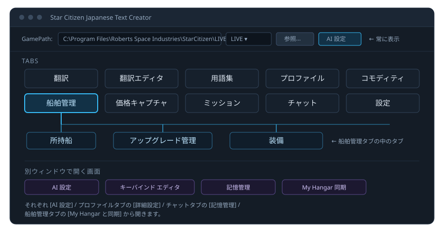
| タブ | 何をするところか |
|---|---|
| 翻訳 | 抽出・翻訳・反映。日本語化の本体（→ 5） |
| 翻訳エディタ | 訳文の検索・手直し・CSV 入出力（→ 7） |
| 用語集 | 固有名詞などの訳し方を固定する（→ 8） |
| プロファイル | キャラクターデザインとキーバインドの保存・復元（→ 9） |
| コモディティ | 交易ルートの検索と価格の確認（→ 11） |
| 船舶管理 | 所持船・アップグレード権利・装備（→ 12） |
| 価格キャプチャ | ゲーム画面のターミナルを読み取って UEX へ送る（→ 13） |
| ミッション | ミッションの一覧と詳細を調べる（→ 14） |
| チャット | AI に日本語で質問する（→ 15） |
| 設定 | 保存先・サーバー・データベース管理（→ 18） |
4最短セットアップ
まずはここだけやれば、ゲームが日本語になります。
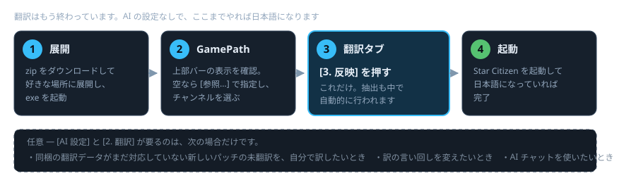
- アプリを起動します。上部の GamePath に Star Citizen のインストール先が自動で入っていることを確認します。空欄なら 参照... から選んでください（RSI Launcher のログから自動検出を試みます）。
- 右隣のコンボボックスで LIVE / PTU など、日本語化したいチャンネルを選びます。
- 翻訳 タブで 3. 反映 を押します。これだけです。ゲームからのテキスト取り出しも中で自動的に行われるので、1. 抽出 も 2. 翻訳 も押す必要はありません。
- Star Citizen を起動して、日本語になっていれば完了です。
ここまでで AI の設定は一切要りません。同梱の翻訳データ（Patch 4.10 対応）がそのまま当たります。新しいパッチで増えた分を自分で訳したい、あるいは訳を書き換えたいという段になって初めて、AI 設定 と 2. 翻訳 の出番です。
5翻訳タブ — 抽出・翻訳・反映
ボタンは 3 つ並んでいますが、ふだん押すのは 3. 反映 だけです。まず「どれを押せばいいのか」から書きます。
| こんなとき | 押すボタン |
|---|---|
| 初めて日本語にする | 3. 反映 だけ |
| アプリを新しいバージョンに入れ替えた | 3. 反映 だけ |
| ゲームにパッチが来て英語に戻った | 1. 抽出 → 3. 反映 |
| 新しいパッチで増えた未翻訳を自分で訳したい 訳の言い回しを変えたい | 1. 抽出 → 2. 翻訳 → 3. 反映 |
3. 反映 は、必要なら抽出も中でやってくれます。ゲームから取り出したファイルがまだ無ければ、反映の処理の中で自動的に取り出してから書き出します。だから初回は 3. 反映 だけで済みます。
ゲームにパッチが当たったあとだけは、すでに取り出したファイルが残っているために自動では取り直しません。このときは 1. 抽出 を先に押して、新しいテキストを取り込んでください。
それぞれが何をしているかを図にすると、こうなります。
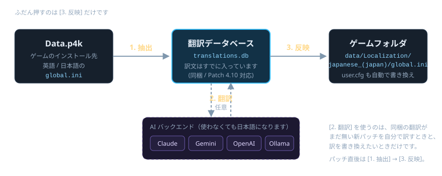
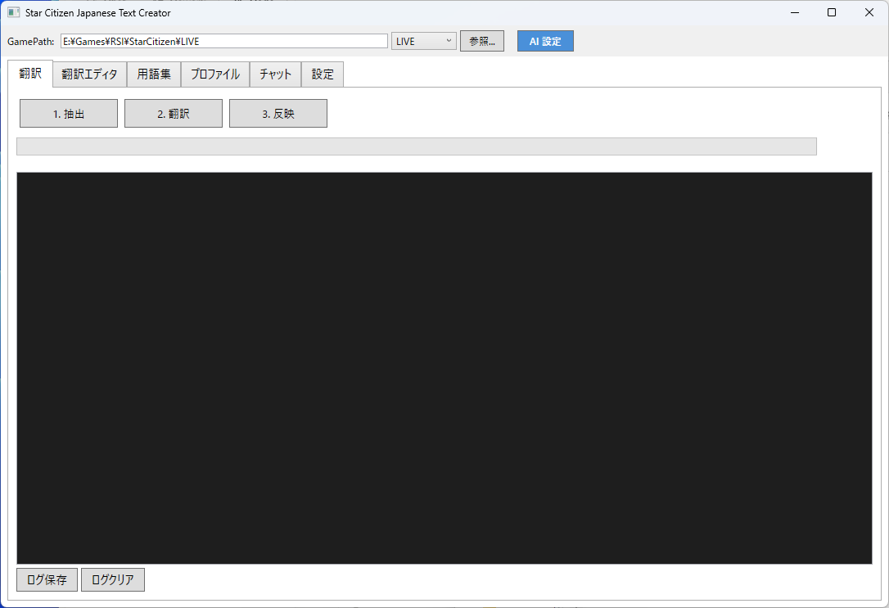
| ボタン | やっていること |
|---|---|
| 1. 抽出 | ゲームの Data.p4k（ZIP64 + ZStd 圧縮）から英語と日本語の global.ini を取り直して翻訳データベースに登録します。パッチでゲーム側のテキストが変わったときに押します。 |
| 2. 翻訳 | ふだんは押しません。まだ訳されていない行を、AI 設定でチェックを入れたバックエンドに翻訳させます（複数にチェックを入れると同時に走ります）。同梱の翻訳データが対応しているパッチなら、そもそも未翻訳の行がほとんど無いので押す必要がありません。 |
| 3. 反映 | ふだん押すのはこれです。翻訳データベースの内容を global.ini にまとめ、ゲームフォルダの data/Localization/japanese_(japan)/global.ini にコピーします。あわせて user.cfg の g_language も書き換えます。取り出し済みのファイルが無ければ、この中で抽出も行われます。 |
処理中は 中止 ボタンが現れ、下のログ欄に進行状況が流れます。ログは ログ保存 でファイルに残せます。
書き出し先の言語フォルダ名は 設定 タブの Output Language で変えられます。既定は japanese_(japan) です。
装備名の印 — 分類・サイズ・グレードが名前で分かる
3. 反映 を実行すると、ゲーム内の装備名の後ろに [軍1C] のような印が付きます。買うときも積むときも、名前を見ただけで分類とサイズとグレードが分かります。
この印は切れます。3. 反映 の並びにある ゲーム内に付ける印: の 装備名の分類 [軍1C] のチェックを外して、もう一度 3. 反映 を実行すると、印の無い状態に戻ります。
| 印 | ゲーム内の表記 |
|---|---|
| 産 | Industrial |
| 軍 | Military |
| 市 | Civilian |
| 隠 | Stealth |
| 競 | Competition |
漢字のうしろの数字がサイズ、英字がグレードです。[軍1C] なら「軍用のサイズ 1、グレード C」です。分類はアイテムの説明文にある Class: の行から取っているので、ゲームが持っている情報そのままです。
印が付くのは、分類を持つ装備 472 品目です。パワープラント、シールド、クーラー、量子ドライブ、レーダーなどが対象で、分類を持たない船舶武器や個人装備には付きません。
設計図（ブループリント）がもらえるミッションには、名前のうしろに [BP] が付きます。Shubin の採掘発注や Wikelo のレシピなど 12 件です。
装備名の印には色を付けていません。機体ロードアウトマネージャーの装備名欄はゲームの強調タグを解釈せず、<EM4> という文字がそのまま見えてしまうためです。ミッション名の印だけ色が付きます。
ミッション名の派閥と貢献度 — 受ける前に分かる
3. 反映 の並びにある ゲーム内に付ける印: の ミッションの派閥と貢献度 にチェックを入れると、ミッション名の後ろに [Headhunters +1000] のような印が付きます。どの派閥の評価がいくつ上がる依頼なのか、受ける前に分かります。
初回はデータの取り込みに 30 秒ほどかかります。装備データを再抽出 を実行したときにも一緒に取り込まれます。
同じ名前のミッションがまとめて扱われることがあります。ゲーム側でミッション名が使い回されているためで、その場合は [+50/100/200] のように取り得る値を並べます。派閥が複数に割れるときは派閥名を出さず、値だけを出します。英語圏の同種の MOD も同じ作りです。
ゲーム内に付ける印は 3 つとも個別に切り替えられます。装備名の分類 [軍1C] と 設計図ミッション [BP] は既定でオン、ミッションの派閥と貢献度 は既定でオフです。切り替えたあとは 3. 反映 をもう一度実行してください。
6AI 設定 — 翻訳バックエンドの登録
日本語にしたいだけなら、この章は飛ばして構いません。翻訳データは同梱されているので、AI の登録なしで 3. 反映 だけで日本語になります。ここが必要になるのは、新しいパッチの未翻訳を自分で訳したいときと、AI チャットを使いたいときです。
上部バーの AI 設定（または 設定 タブの AI 設定を開く）で、翻訳とチャットに使う AI を登録します。
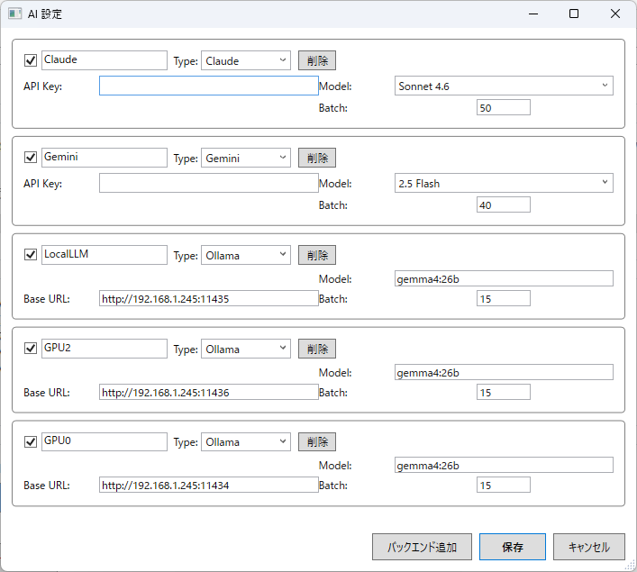
- バックエンド追加 で行を増やします。
- 種類（Claude / Gemini / OpenAI / Ollama）、API キー、モデル名を入れます。
- 翻訳に使いたいものだけチェックを入れます。
- 保存 で閉じます。
チェックボックスは「翻訳に使うかどうか」の選択です。チェックを入れたバックエンドが同時に走ります。チャットで使うバックエンドは、チャットタブ側のコンボボックスで別に選びます。
| バックエンド | 性格 | 必要なもの |
|---|---|---|
| Claude (Anthropic) | 高品質な翻訳 | API キー（取得方法） |
| Gemini (Google) | 高速・大量処理向き | API キー（取得方法） |
| OpenAI (ChatGPT) | 高品質・バランス型 | API キー（取得方法） |
| Ollama (ローカル) | 無料・オフライン対応。API キー不要 | Ollama ＋ Gemma4（下で説明） |
Ollama（ローカル・無料）で翻訳させる
API キーを使いたくない場合は、自分の PC で動く Ollama を使えます。モデルは Gemma4 の e2b / e4b がおすすめです。
| モデル | 性格 | ファイル サイズ | 推奨 VRAM | 推奨 RAM | 手順 |
|---|---|---|---|---|---|
gemma4:e2b |
軽量・高速 まずはこちら |
7.2GB | 8GB 以上 | 12GB 以上 | e2b インストール手順 |
gemma4:e4b |
高品質 VRAM に余裕があれば |
9.6GB | 12GB 以上 | 16GB 以上 | e4b インストール手順 |
- Ollama をインストールします。
https://ollama.com/download からインストーラーをダウンロードして実行します（詳しい手順）。 - モデルをダウンロードします。コマンドプロンプトか PowerShell で次のどちらかを実行します。
ollama pull gemma4:e2bollama pull gemma4:e4b - AI 設定 に入力します。
項目 入力値 Type Ollama Model gemma4:e2bまたはgemma4:e4b（ダウンロードした方）Base URL http://127.0.0.1:11434（同じ PC で動かす場合）Batch 既定値のままで構いません - チェックボックスをオンにして 保存 します。
ゲームをしながらの翻訳には向きません。Ollama は GPU の VRAM を使います。Star Citizen も VRAM を大量に使うため、ゲームプレイ中に翻訳やチャットを実行するとゲームのパフォーマンスが落ちることがあります。ゲーム中は避けるか、軽い gemma4:e2b を使うか、別 PC の Ollama に接続してください（Base URL を http://192.168.x.x:11434 に変えます）。Claude / Gemini などのクラウド API なら VRAM への影響はありません。
翻訳がパースエラーで失敗する場合（ログに「パース失敗 (0行)」と出る場合）は、Ollama のコンテキスト長不足が原因のことがあります。環境変数 OLLAMA_NUM_CTX=8192 を設定するか、Batch を 1〜5 に減らすと改善することがあります。
7翻訳エディタ — 訳文の確認と手直し
AI の訳が気に入らないときや、特定の語を探したいときに使います。
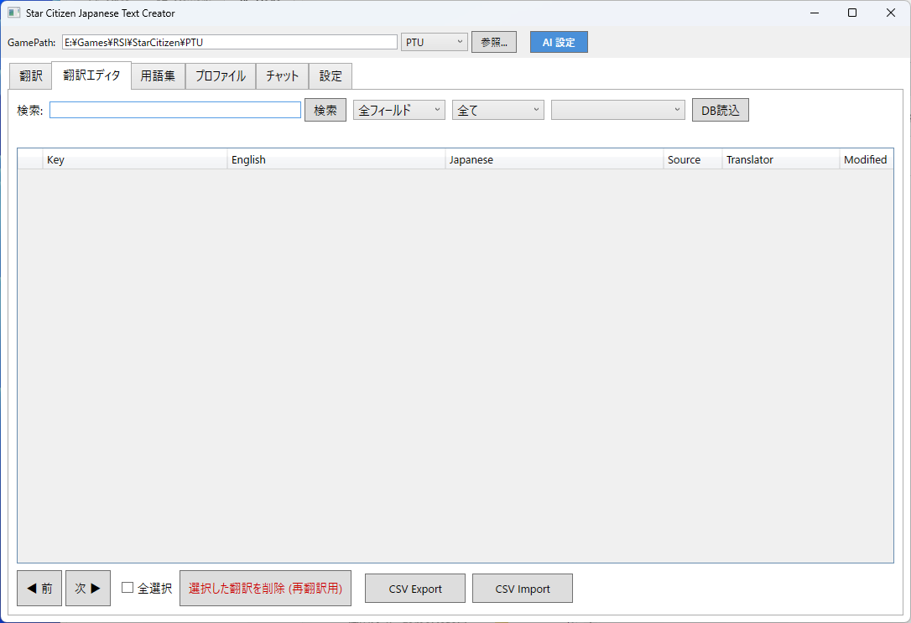
探す
- 検索欄に語を入れて 検索。部分一致（既定でオン）を外すと完全一致になります。
- 検索欄の右に並ぶコンボボックスで検索対象を 全フィールド / Key / English / Japanese から選べます（画面上にラベルはありません）。
- その隣のソース絞り込みで、訳がどこから来たのかで絞れます。
official— ゲーム同梱の公式日本語ai— AI が訳したものmanual— 手で直したものcsv— CSV から取り込んだものglossary— 用語集の一括置換によるものoriginal— 原文のままにしたものuntranslated— まだ訳されていないもの
- さらに右のコンボボックスでは、どの AI が訳したかで絞り込めます。
- 件数が多いときは ◀ 前 次 ▶ でページを送ります。
直す
- 一覧の Japanese 列を直接書き換えると、そのレコードは
manualになり、以降の再翻訳や同梱 DB のマージで上書きされません。 - 選択した翻訳を削除 (再翻訳用) — 訳文を消して未翻訳に戻します。次の 2. 翻訳 で訳し直されます。
- 全て原文 — 選んだ行を英語のまま表示させます。訳すとかえって分かりにくい用語に使います。
- CSV Export / CSV Import — 表計算ソフトでまとめて直したいときに。
8用語集 — 訳し方を固定する
船名・地名・企業名など、毎回同じ訳になってほしい語を登録します。以降の AI 翻訳はこの対訳を守るようになります。
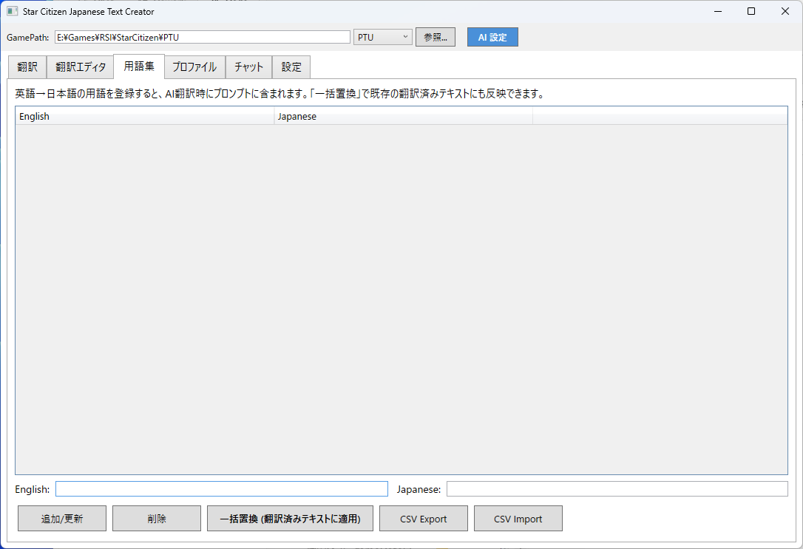
- English: と Japanese: に入れて 追加/更新。
- 一括置換 (翻訳済みテキストに適用) — すでに訳し終わっているテキストにも、登録した対訳を当て直します。用語を後から追加したときに使います。
- 全選択 と 選択削除 でまとめて消せます。
- CSV Export / CSV Import で用語集の持ち出し・持ち込みができます。
英語のまま残したい語は用語集ではなく 全て原文 を使います。用語集は AI に「この英語はこの日本語で訳して」と指示するための仕組みなので、英語のまま残したい語は 翻訳エディタでその行を選んで 全て原文 を押すほうが確実です。
9プロファイル — バックアップと復元
パッチのたびに消えがちなキャラクターデザインとキーバインド設定を、名前を付けて保存しておけます。
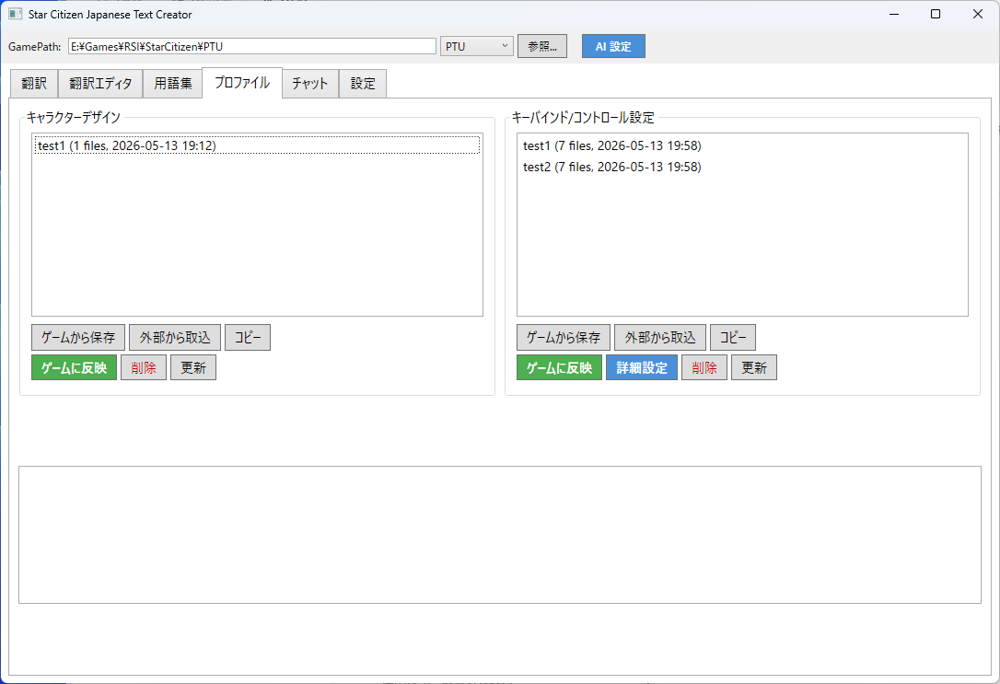
| ボタン | 動き |
|---|---|
| ゲームから保存 | 今ゲームに入っている設定を読み取って、プロファイルとして保存します。 |
| 外部から取込 | 他の場所にあるファイル（フォルダを指定）を取り込みます。 |
| コピー | 選んだプロファイルを複製します。試す前の退避に。 |
| ゲームに反映 | 選んだプロファイルをゲーム側に書き戻します。 |
| 詳細設定 | キーバインド側のみ。キーバインドエディタを開きます。 |
10キーバインドエディタ
プロファイルタブの 詳細設定 から開きます。機能別 / キーボード / マウス / コントローラー / HOTAS の 5 タブに分かれています。
機能別タブ — 一覧から探して割り当てる
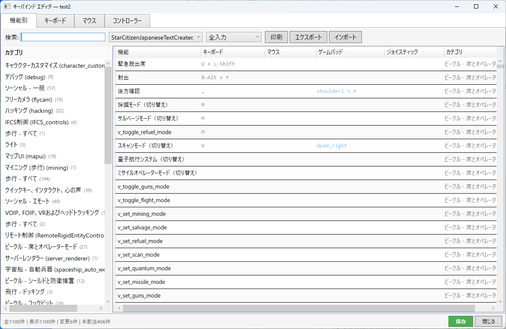
- 入力種別のコンボボックスで 全入力 / キーボード / マウス / ゲームパッド / HOTAS / 未割当のみ / 変更済みのみ に絞り込めます。
- 行をダブルクリックすると割り当てダイアログが開きます。
- 翻訳データベースと連動しているので、機能名を日本語で読めます。
デバイス別タブ — 絵の上で確認する
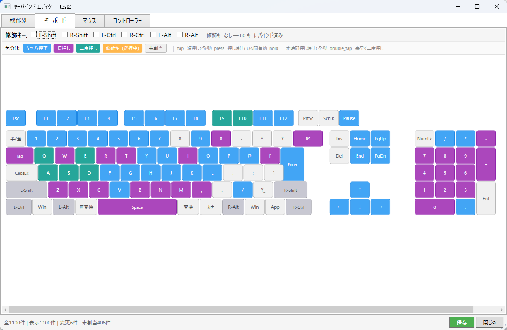
- キーや軸の上に、いま何が割り当たっているかが表示されます。
- activation mode（押した瞬間 / 長押し / ダブルタップ など）が色分けされます。
- キーをクリックすると、その場で割り当てを変更できます。
- 印刷 でチートシートとして紙に出せます。エクスポート / インポート で設定の持ち運びもできます。
- 変更したら 保存 を忘れずに。
11コモディティ — 交易ルートを探す
UEX の価格データを元に、どこで何を買ってどこで売れば一番儲かるかを計算します。
ルートを探す
- 船: を選ぶと 積載 (SCU) が自動で入ります（所持船に登録した船が候補に出ます）。
- 予算 (aUEC)、買い星系: / 売り星系:（全て / Stanton / Pyro / Nyx）を指定します。
- 必要なら コモディティ選択 (全て) で扱う商品を絞ります。
- 絞り込みのチェックを調整します。
- 地上小規模拠点を除く（既定でオン）— 着陸が面倒な小拠点を候補から外します
- 外部積込対応のみ (Hull C等) — 外部グリッドに積む船向け
- 在庫不足ルートを除く — 在庫が足りない拠点を外します
- ルート検索 を押します。価格が古いと感じたら 価格更新 で取り直します。
拠点ごとに見る
結果の行を選ぶと 購入場所 (安い順) と 売却場所 (高い順) の詳細が開き、差益と相手先がわかります。閉じるときは ✕ を押します。
価格は UEX に集まったプレイヤーの報告です。実際のゲーム内価格と食い違うことがあります。ずれを見つけたら 価格キャプチャ から報告できます。
12船舶管理 — 所持船・アップグレード・装備
このタブの中に 所持船 アップグレード管理 装備 の 3 つがあります。
所持船 — 持っている船を登録する
ここに登録した船は、コモディティタブの船セレクタにも出てきます。
- 手で追加する場合 — 船を追加 の 検索: に船名を入れて 検索、候補から選んで 追加。aUEC で買った船は ゲーム内購入 (aUEC) にチェックを入れます。
- まとめて取り込む場合 — My Hangar と同期（下で説明）のあと 同期した船を所持船に反映。手で入れた分は保護されます。
- 各行の アップグレード / 装備 ボタンから、それぞれのタブへ飛べます。
- 行をダブルクリックすると、その船が 船を追加 の入力欄に読み込まれて編集できる状態になり、同時に 装備 タブの 現在の装備 もその船に切り替わります（表示中の画面は所持船のままです）。メーカー欄が空でも船名から自動で判別します。
- ワイプ を押すと、サーバーワイプで無くなる船を選んでまとめて削除できます。ゲーム内 (aUEC) で買った船には既定でチェックが入り、pledge の船は既定で外れます。Wikelo の報酬などワイプ後も残る船はチェックを外してください。
- 船名は 3 文字以上入力すると候補が出ます。一覧から選ぶか、そのまま打ち込んでも構いません。
- メーカーは船名を入れた時点で自動で埋まります。一覧から選び直すことも、直接入力することもできます。登録済みの船でメーカーが空のものは、所持船タブを開いたときに自動で埋まります。
- ローナー 列に、その船を持っていると借りられる機体が出ます。まだ飛べない船を持っている場合、代わりに使える機体がここで分かります。一覧は UEX から取り込んでいます。
My Hangar 同期 — RSI アカウントから読み取る
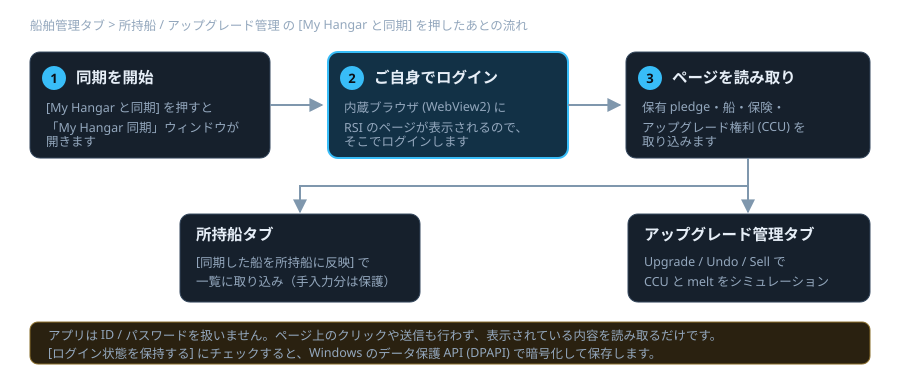
- My Hangar と同期 を押すと「My Hangar 同期」ウィンドウが開きます。
- 内蔵ブラウザ (WebView2) に RSI のページが出るので、そこでご自身でログインします。
- 同期開始 で、保有 pledge・船・保険・アップグレード権利 (CCU) を読み取ります。
- 次回から入力を省きたい場合は ログイン状態を保持する にチェックを入れます。
アプリは ID / パスワードを扱いません。ページ上のクリックや送信も行わず、表示されている内容を読み取るだけです。ログイン状態を保持する を使う場合、ログイン情報は Windows のデータ保護 API (DPAPI) で暗号化して保存されます（このユーザーアカウントでしか復号できません）。
アップグレード管理 — CCU と melt を試算する
保有している船と、使えるアップグレード権利 (CCU) の対応を一覧します。実際に RSI 側で何かを実行するわけではなく、手元でのシミュレーションです。
- Upgrade で権利を当ててみて、連鎖させ、Undo で戻せます。シミュレーションをリセット で全部戻します。
- 権利（CCU）の色は 緑 = いま使える、紫 = このシミュレーションで適用中、灰 = 使用不可（元の船を持っていない、または売却予定にした船が起点）です。船の行が灰色になっているものは、使える権利が無く適用もしていない船です。
- Sell で pledge 単位の売却 (melt) を試算します。現在の Store Credit、売却で得られる Credit、失う機体、LTI 喪失警告、Buy Back の残トークンが表示されます。
- 販売中の船 (RSI ストア) を開くと、いま売られている船・パック・アップグレードが見られます。Warbond のみ で絞り込めます。情報が古ければ ストア情報を更新。
- プランナー / melt シミュレーション では、船ごとに「要る / 要らない / 保留」を付けて 提案を計算 したり、目標価格から逆算したりできます。
装備 — 持っているコンポーネントと船の装備
- 所持コンポーネント に、パワープラント / シールド / クーラー / 量子ドライブ / 船舶武器などを、使用可のチェックや数量を含めて登録します。
- 現在の装備 で船を選び、ポートごとに何を積んでいるかを設定します。設定していないポートは「現在」列にも初期装備がそのまま表示されます（灰色の文字）。自分で設定したポートだけが青い太字になり、行の背景も青くなります。
- 所持船 の行をダブルクリックするか、行の 装備 ボタンを押すと、その船の装備をここで開けます。
- どこで買えるかを知りたいときは、装備の名前にマウスを乗せます。デフォルト / 現在 列、装備を設定 の候補、所持コンポーネント の名称、どれのツールチップにも UEX の購入場所と価格が出ます。
- 購入先はアプリの起動後にバックグラウンドで取り込みます。まだ取れていない間は 取得中… と出ます。船に最初から付いている装備は店で売られていないことが多く、その場合は 購入先の登録がありません と出ます。
- 全てデフォルトに戻す で初期装備に戻せます。
- 設定した内容は、船名にマウスを乗せたときのツールチップにも反映されます。
装備データが古いと感じたら、アップグレード管理 の 装備データを再抽出 を押します。「Data.p4k から船と装備のデータを再抽出します（数分）」と確認が出ます。初回は実行しておくことをおすすめします。
13価格キャプチャ — 画面を読んで UEX に送る
ゲーム内の取引ターミナルを画面ごと読み取り、文字認識 (OCR) して UEX に価格を報告する機能です。読み取りと確認まではそのまま使えますが、UEX へ送信するには 設定タブで UEX API キーを登録しておく必要があります。
- ゲームでターミナルを開いた状態にします。
- 手動キャプチャ (画面全体) を押すか、PrintScreen を押します（PrintScreenホットキー有効 は既定でオンです。切りたいときはチェックを外します）。クリップボードやファイルからの読み取りもできます。
- 認識結果を確認します。ターミナル:（場所）、モード:（BUY / SELL）、信頼度: が表示されます。
- 内容が正しければ UEXに送信。必要に応じて スクリーンショットも送信 にチェックを入れます。
認識結果は必ず目で確認してください。OCR は読み違えます。誤った価格を送るとほかのプレイヤーの判断を狂わせます。
14ミッション — 依頼を調べる
Data.p4k から取り出したミッション情報を、カテゴリ別に一覧・検索できます。
- 初回は ミッション読み込み（緑のボタン）を押します。
- 左のカテゴリから種類を選びます。
- 組合: ランク: で絞り込み、検索欄で名前や依頼者から探します。
- そのまま語を入れると部分一致で探せます。先頭または末尾に
*を付けると、その位置での一致に絞り込めます。英語名・日本語名・依頼者のほか、説明文や組合・ランクなども検索対象です。
- そのまま語を入れると部分一致で探せます。先頭または末尾に
- 一覧（名前 / 難易度 / 報酬 (aUEC) / 場所）から行をクリックすると、右に詳細が出ます。報酬・レピュテーション要件と報酬・前提ミッション・敵構成・制限時間などが読めます。
Wiki 側のミッション情報も取り込みたい場合は、設定 タブの Wiki ミッション取得 を実行します。文字が小さい・大きいと感じたら、設定タブの ミッション詳細フォントサイズ（既定 14pt）で調整できます。
15AI チャット — 日本語で質問する
Star Citizen について、AI に日本語で聞けます。単に AI の知識で答えさせるだけでなく、データベースや外部 API を調べさせて答えさせることもできます。
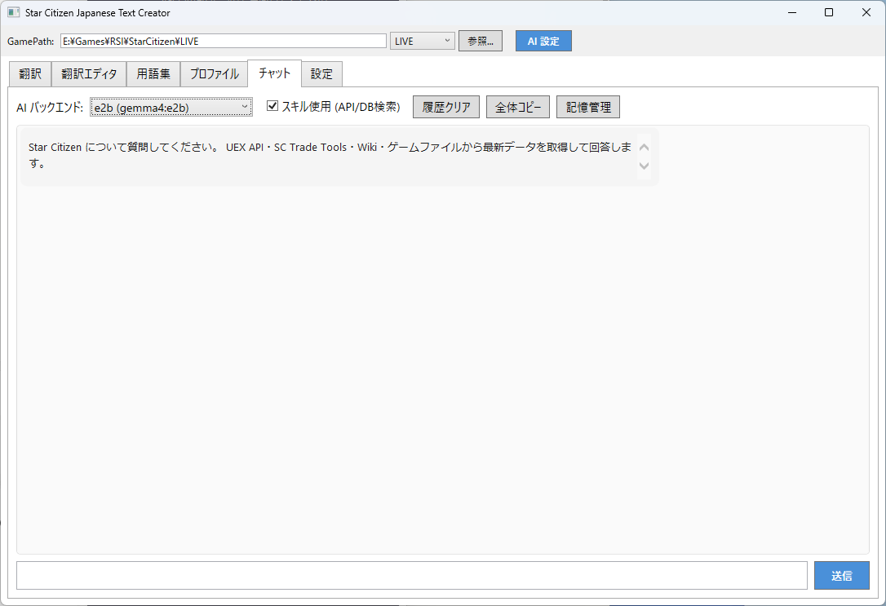
- AI バックエンド: で、どの AI に答えさせるかを選びます（AI 設定で登録したもの）。
- スキル使用 (API/DB検索)（既定でオン）— AI が船・装備・ロケーション・交易価格などを自分で調べてから答えます。オフにすると AI の知識だけで答えます。
- 📡 外部AI相談: — チェックを入れた別の AI にも同じ質問を投げ、答えを突き合わせられます。
- 履歴クリア で会話をリセット、全体コピー で会話をまとめてクリップボードへ。
- 記憶管理 は ナレッジの画面を開きます。
ヒント: ロケーション検索（ステーションや都市の精錬所・ハンガー・エレベーターの場所など）は専用タブではなく、このチャットのスキルとして動きます。「Area18 の精錬所はどこ？」のように普通に聞いてください。
16Web チャット — ブラウザ・スマホから使う
PC 上のアプリが Web サーバーになり、同じ Wi-Fi のスマホのブラウザからチャットできます。ゲームを全画面で遊びながら、手元のスマホで質問する、という使い方ができます。
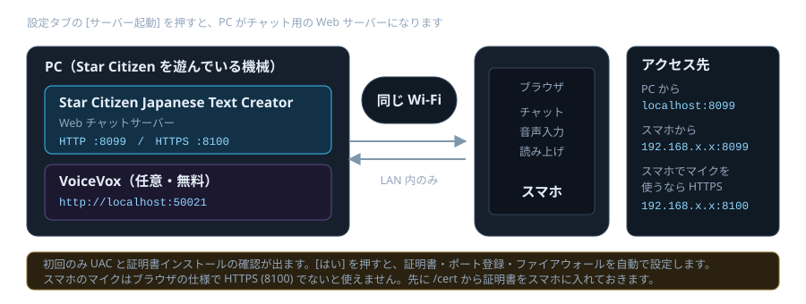
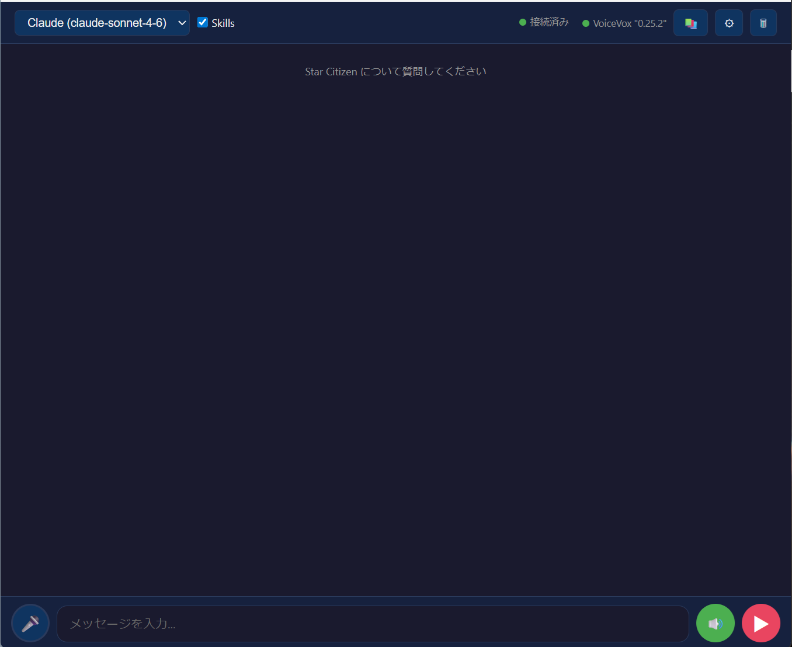
起動する
- 設定 タブで HTTP ポート:（既定
8099）と HTTPS:（既定8100）を確認します。 - サーバー起動 を押します。HTTP と HTTPS が同時に立ち上がります。
- 初回のみ UAC プロンプトが出ます。はい を押すと、証明書のインストール・HTTPS ポートの登録・ファイアウォールの開放を自動で行います。続けて 証明書インストール確認が 3 回出るので、すべて はい を押します。
- ブラウザで次の URL を開きます。
- PC から:
http://localhost:8099/ - スマホなど LAN 内の機械から:
http://192.168.x.x:8099/ - スマホでマイクを使う場合:
https://192.168.x.x:8100/
- PC から:
192.168.x.x の調べ方: PC でコマンドプロンプトか PowerShell を開いて ipconfig を実行します。「Wi-Fi」または「イーサネット」の IPv4 アドレス（例 192.168.1.15）がこの PC のアドレスです。アプリの画面にも表示されます。スマホは同じ Wi-Fi につないでください。
スマホでマイクを使う
ブラウザは localhost 以外の HTTP ではマイクを許可しません。音声入力を使うときだけ、次の手順で HTTPS 側 (8100) を使えるようにします。マイクを使わないなら http://192.168.x.x:8099/ のままで構いません。
- スマホのブラウザで
http://192.168.x.x:8099/certを開きます。 - ［証明書をダウンロード］をタップしてインストールします。
- iPhone: 設定 → 一般 → VPN とデバイス管理 → プロファイルをインストール → 設定 → 一般 → 情報 → 証明書信頼設定 → 有効化
- Android: 設定 → セキュリティ → 証明書のインストール → CA 証明書 → ダウンロードしたファイルを選択
https://192.168.x.x:8100/を開きます。マイクが使えるようになります。
「この接続ではプライバシーが保護されません」と出たとき。自己署名証明書を使っているためで、異常ではありません。詳細設定（iPhone Safari なら 詳細を表示）から続行してください。一度許可すれば、同じブラウザでは次から出ません。通信自体は暗号化されています。
証明書はこの PC 専用の自己署名証明書で、外部の認証局は使いません。不要になったらスマホから削除してください。ファイアウォールには「SC Japanese Assistant HTTP」「SC Japanese Assistant HTTPS」というルール名で登録されます。
音声で読み上げさせる
- PC で VoiceVox を起動しておきます（無料）。既定の接続先は
http://localhost:50021です。 - 画面下の入力バーにあるスピーカーボタンを押すと読み上げがオンになります。オフのときは 🔈、オンにすると緑色の 🔊 に変わります。押さないかぎり読み上げません。
- オンのときは、質問を送ると「おまちください」、回答が来ると「お待たせしました」と AI が作った要約を読み上げます。
- 画面右上の歯車アイコンから話者（キャラクター）を変えられます。アプリの設定タブの VoiceVox 話者ID でも指定できます。
17ナレッジ（記憶）— AI に覚えさせる
AI が知らないこと（最新のバグ、コミュニティ用語、自分だけの Tips）を教えて覚えさせる機能です。覚えた内容はチャットの回答に反映されます。チャットタブの 記憶管理 から開きます。
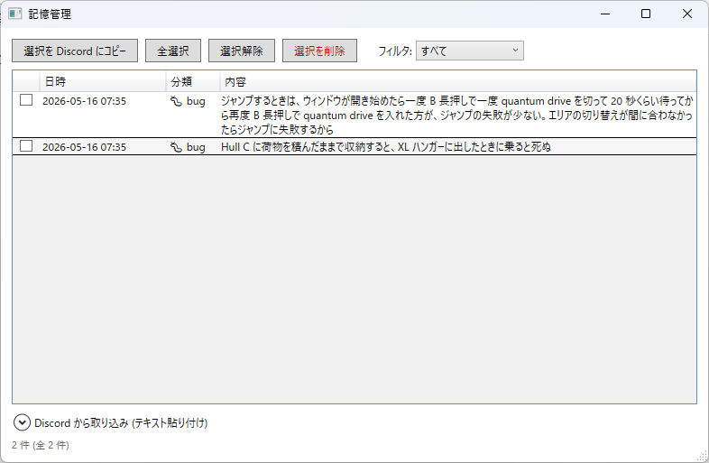
- 保存 — チャットで「〜を覚えて」と伝えるか、この画面から直接登録します。
- カテゴリ — バグ / 用語 / Tips / 一般 で分類でき、フィルタで絞り込めます。
- 削除 — 全選択 選択解除 選択を削除 でまとめて整理できます。
バグ情報を覚えさせておくと便利です。例:「エレベーターに乗ると落ちることがあるので、乗る前に一度しゃがむと回避しやすい」。
Discord とのやりとり
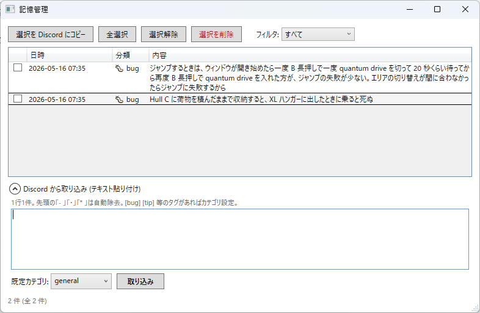
- 選択を Discord にコピー — 選んだ記憶を、カテゴリ別にまとめた Discord 用のマークダウンとしてクリップボードにコピーします。そのまま貼り付けて共有できます。
- Discord から取り込み（画面下部を展開）— Discord やテキストファイルからコピーした内容を貼り付けて 取り込み を押すと一括登録できます。行頭の
-や[bug]のようなタグは自動で認識されます。
18設定タブ
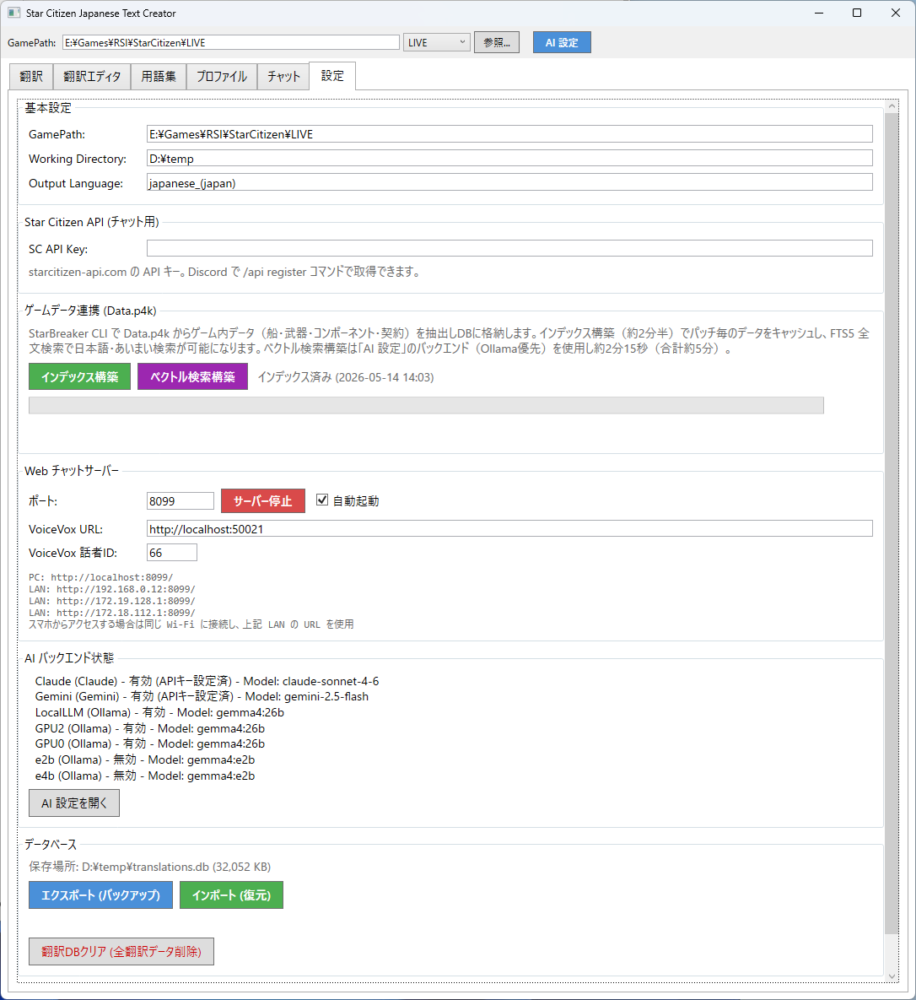
| グループ | 内容 |
|---|---|
| 基本設定 | GamePath、Working Directory（データの保存先）、Output Language（書き出す言語フォルダ名。既定 japanese_(japan)） |
| Star Citizen API (チャット用) | チャットのスキルが使う SC API Key |
| UEX 価格送信 (Screen Capture) | 価格キャプチャで使う UEX API Key |
| ゲームデータ連携 (Data.p4k) | インデックス構築（Data.p4k から船・武器・コンポーネント情報を取り込む）／ベクトル検索構築／Wiki ミッション取得 |
| Web チャットサーバー | HTTP / HTTPS ポート、VoiceVox の URL と話者 ID、サーバー起動、自動起動 |
| AI バックエンド状態 | AI 設定を開く |
| 表示設定 | ミッション詳細フォントサイズ（既定 14pt） |
| データベース | エクスポート (バックアップ)／インポート (復元)／所持船舶データを含める／翻訳DBクリア (全翻訳データ削除) |
変更したら最後に 設定を保存 を押してください。
インポート (復元) の前に。バックアップを取り込むと、ファイル選択のあと「インポート選択」ダイアログが出て、何を復元するかを選べます。所持船舶データを含める のチェックを外してエクスポートすると、所持船・pledge・CCU・マークといった個人データを除いたバックアップになります。人に配るときはこちらを使ってください。
翻訳DBクリア (全翻訳データ削除) は、手で直した訳もすべて消します。実行前に エクスポート (バックアップ) を取っておくことを強くおすすめします。
19データの保存先
アプリが作るファイルはすべて Working Directory の中にまとまっています。バックアップしたいときはこのフォルダごとコピーしてください。
装備の購入先 (UEX) は equipment_cache.db に入ります。このファイルもアプリに同梱されているので、初回から購入先が表示されます。
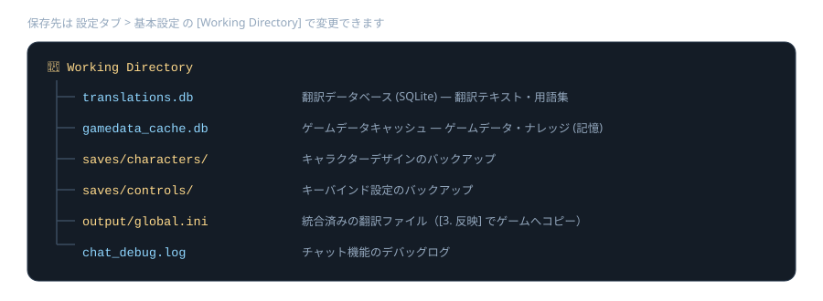
20困ったときは
ゲームが日本語にならない
次の順に確認してください。
- 上部の GamePath が、いま遊んでいるチャンネル（LIVE / PTU など）を指しているか。
- 翻訳 タブで 3. 反映 を実行したか。アプリを更新したあとは毎回必要です。
- ゲームフォルダに
data/Localization/japanese_(japan)/global.iniができているか。 - ゲームフォルダの
user.cfgにg_language = japanese_(japan)の行があるか。
パッチが来たら英語に戻った
ゲーム側のファイルがパッチで置き換わったためです。1. 抽出 → 3. 反映 をもう一度実行してください。これだけで日本語に戻ります。同梱の翻訳データが対応しているパッチなら 2. 翻訳 は不要です。同梱版がまだ対応していない新しいパッチで、増えた英語を自分で訳したい場合にだけ、間に 2. 翻訳 を挟みます。
訳がおかしい / 訳さないでほしい語がある
翻訳エディタでその行を直接書き換えると manual になり、再翻訳や同梱 DB のマージでは上書きされません。毎回同じ語を直しているなら、用語集に登録して 一括置換 (翻訳済みテキストに適用) を実行するほうが早いです。ただし一括置換だけは例外で、手で直した行も置き換えます。英語のままにしたい語は、翻訳エディタでその行を選んで 全て原文 を押してください。
スマホからつながらない
- PC とスマホが同じ Wi-Fi につながっているか確認します。
- 設定タブで サーバー起動 を押したか、初回の UAC プロンプトで はい を選んだか確認します。
- PC で
ipconfigを実行して IPv4 アドレスを確認し、そのアドレスでアクセスします。 - マイクを使うなら
https://と 8100 番であることを確認します。
スマホでマイクのボタンが反応しない
HTTP（8099）で開いている可能性が高いです。ブラウザはセキュアな接続でないとマイクを許可しません。スマホでマイクを使うの手順で http://192.168.x.x:8099/cert から証明書を入れたうえで、https://192.168.x.x:8100/ で開き直してください。証明書の警告は 詳細設定 から続行します。それでもだめな場合は、ブラウザのサイト設定でマイクがブロックされていないか確認します。
船の初期装備が表示されない / 古い
船舶管理 > アップグレード管理 の 装備データを再抽出 を実行してください。数分かかります。初回は実行しておくことをおすすめします。
とくに武器 (ガン) のデフォルトが空欄のままの場合は、再抽出が必要です。古いバージョンで作られたデータには、ジンバル越しに積まれている武器が入っていません。再抽出すると、ジンバルの下に実際の武器が出るようになります。
装備の購入先が「取得中…」のまま / 出てこない
購入先は起動のたびにバックグラウンドで UEX から取り込みます。回線にもよりますが全部そろうまで十数秒から 1 分ほどかかるので、少し待ってからもう一度マウスを乗せてください。ネットにつながっていないときは前回取り込んだ内容がそのまま出ます。船に最初から付いている装備は店で売られていないことが多く、その場合は待っても 購入先の登録がありません のままです。UEX の API キーは要りません。
My Hangar 同期でログインできない
内蔵ブラウザ内で RSI にログインしてから ログイン完了 → 再試行 を押してください。WebView2 ランタイム（Evergreen）が入っていない環境では内蔵ブラウザが表示されません。Windows 10 / 11 には通常入っていますが、入っていない場合は Microsoft から導入してください。
翻訳データを全部やり直したい
設定 タブの 翻訳DBクリア (全翻訳データ削除) を実行してから、1. 抽出 をやり直します。手で直した訳も消えます。実行前に エクスポート (バックアップ) を取ってください。